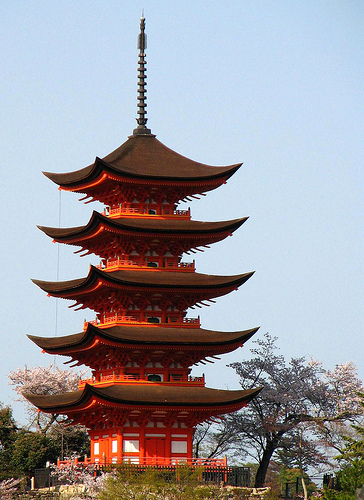
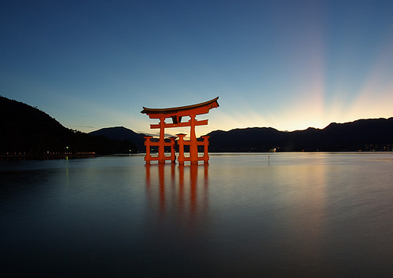

Miyajima
Miyajima Island is the popular name of Itsuku-shima Island, situated in Hatsukaichi City in southwestern Hiroshima. It is a scenic site in which the mountains, sea, and red shrine buildings blend together in harmony, and the entire island is designated as a historic site. It is said to be one of the three most beautiful sights in Japan, along with Matsushima in Miyagi Prefecture and Ama-no-hashidate in Kyoto. The origin of Miyajima is said to date back to when the Itsuku-shima-jinja Shrine was built in 593, the year Empress Suiko took the throne. But the island of Miyajima itself has had a long history of being an object of worship, especially its Mt. Mi-sen that rises up at the center of the island. Men of power always worshiped and protected Miyajima.
As the name implies, Momiji-dani Park, or Maple Leaf Park, where the Momiji-dani-gawa River flows, has many maple trees, and is a famous spot for viewing autumn leaves. You can climb Mt. Mi-sen from there by ropeway or on foot along a climbing path. From the mountaintop, you can enjoy the beautiful scene of the numerous islands of the Seto Inland Sea. There are bathing beaches with camping grounds around the island, and sea bathers throng to the island in summer.

Home